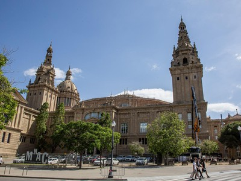
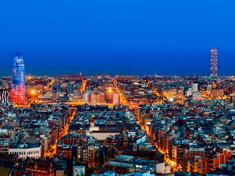
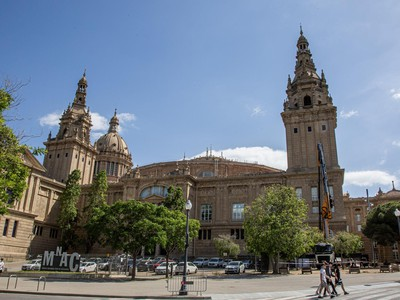
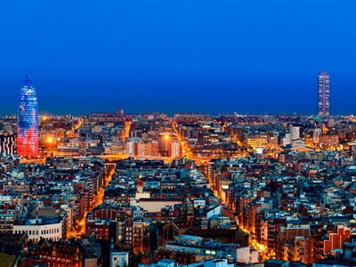

Sagrada Familia

Obra maestra de Antoni Gaudí y símbolo de la ciudad.
Ubicación: Eixample
Descubre la ciudad mediterránea
 



Obra maestra de Antoni Gaudí y símbolo de la ciudad.
Ubicación: Eixample
Parque modernista con vistas espectaculares.
Ubicación: Gràcia
Paseo emblemático lleno de vida y cultura.
Ubicación: Centro
Zona verde con museos y miradores.
Ubicación: Sants-Montjuïc